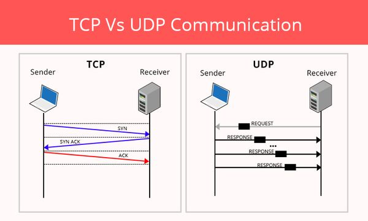

Existono due protocoli più representativi per la capa di trasporto. Questi sono i TCP e l'UDP
TCP viene di "Transmission Control Protocol" si usa nelle comunicazioni traverso la rete. E un protocolo di comunicazione orientato alla conessione, punto a punto e affidabile. Trasmite l'informazione finché non arriva un timeout o una signale di acknowledgment che invia il cliente quando ha finito di scaricare tutti i dati aspettanti.
E un protocolo senza conessione o connectionless usato per stabilire in minimo di toleranza e alla volta una perdida di latenza per l'invio di pacchetti tramite internet. Quindi scambia bassa latenza per alta affidabilità
A continuazione, illustriamo con una imagine la diferenza fra TCP e UDP:
SSL viene di "Secure Sockets Layer" e serve per mantenere la conessione sicura in internet salvaguardando qualsiasi informazione sensibile che s'invia fra sue sistemi, dificoltando ai criminali di leggere e modificare la informazione trasferita, inclusa informazione di carattere personale. Questo è posibile grazie a che questo protocolo si assicura che qualsiasi informazione trasferita traverso siti e utenti, o traverso due sistemi rimanga imposibile di leggere. Usa algoritmi di encriptazione per mescolare l'informazione transportata. TLS (Transport Layer Security) è un aggiornamento del protocolo SSL.